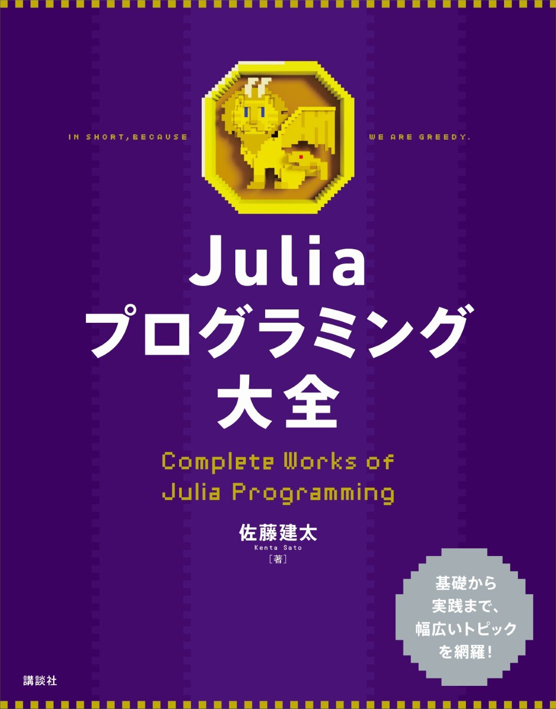

このサイトについて
このウェブサイトは書籍「Juliaプログラミング大全」（講談社サイエンティフィク）のサポートページです。

書籍中のサンプルコードはサンプルコードを参照してください。
既知の訂正事項は訂正を参照してください。
本書に関して、著者への質問や誤植の指摘等は bicycle1885@gmail.com までご連絡ください。
購入
一般書店のほか、次の通販サイトから購入できます。
更新履歴
- 2023/04/27 ウェブサイトを公開
目次
- 第1部 導入
- 1章 Julia観光
- 2章 環境構築
- 3章 ファーストステップ
- 第2部 データと言語の基礎
- 4章 数値と算術
- 5章 コレクション
- 6章 文字列
- 7章 スコープと構文
- 8章 型システム
- 9章 多重ディスパッチ
- 10章 メタプログラミング
- 第3部 ライブラリ
- 11章 科学技術計算
- 12章 並行プログラミング
- 13章 システムプログラミング
- 14章 外部プログラムの実行
- 15章 他のプログラミング言語との連携
- 第4部 開発
- 16章 パッケージ管理と開発
- 17章 開発実践ガイド
- 18章 性能の改善
- 付録
- A Markdown
- B TOML
- C GitとGitHubの基本